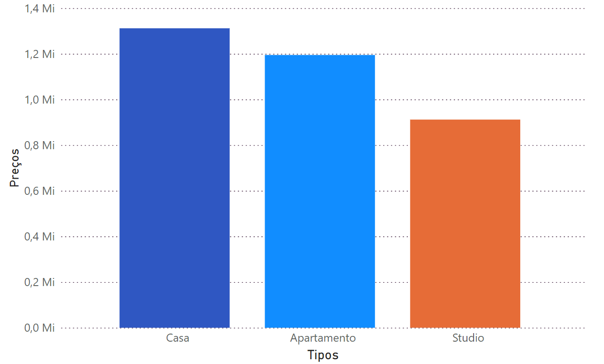
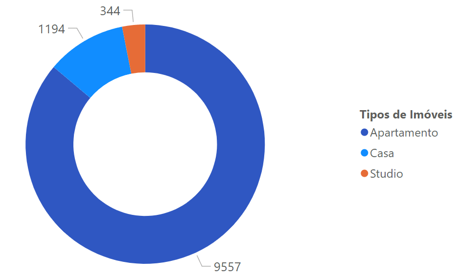
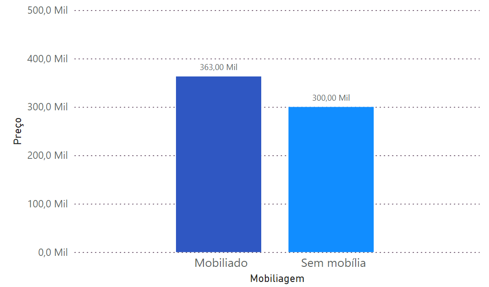
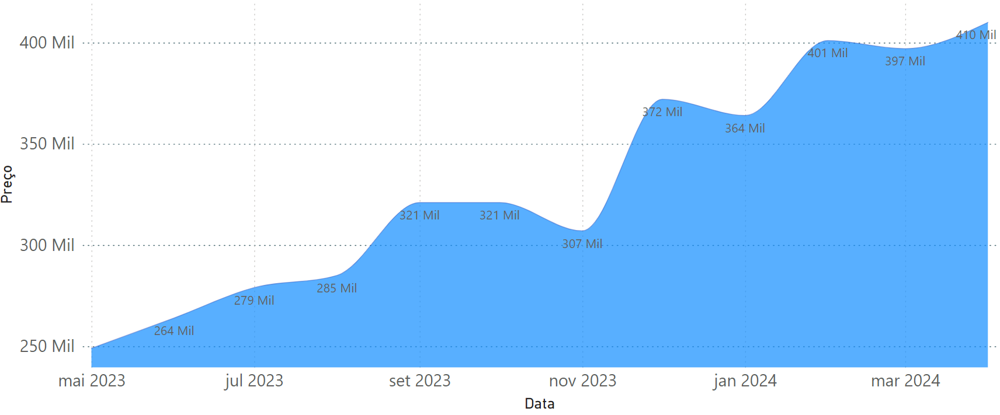
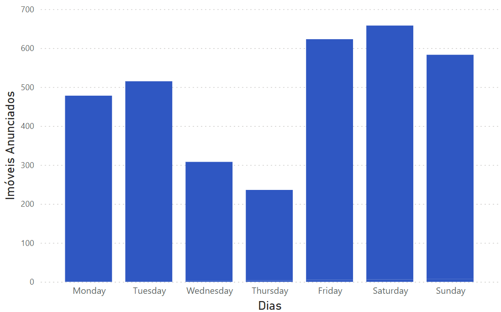
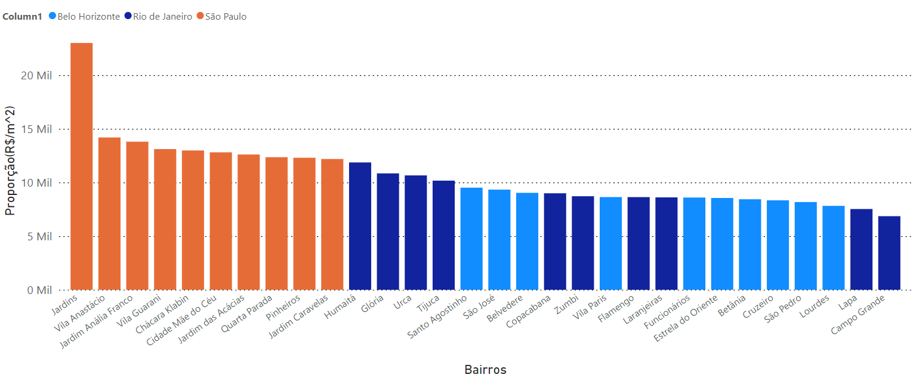
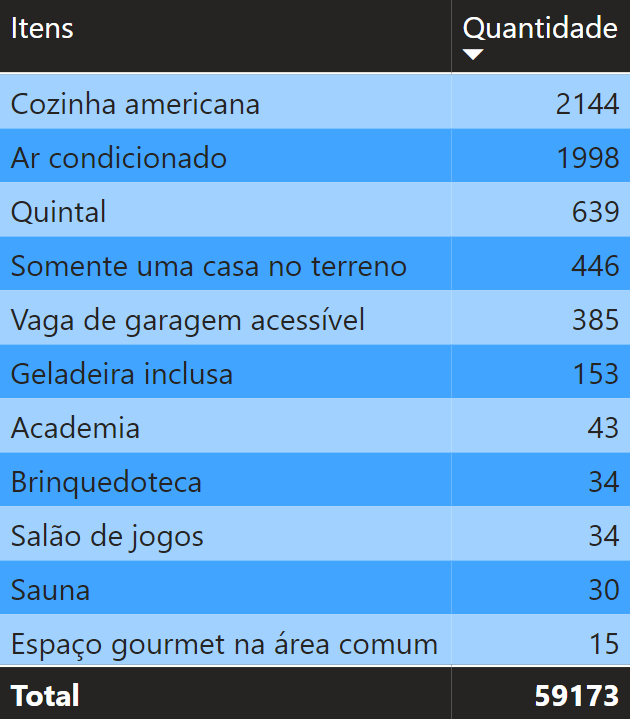

Visão geral
Objetivo
Nesse projeto, objetivei desenvolver um conjunto de dados único, para trabalhar com algo mais original e treinar minhas capacidades com API´s e WebScraping, fiz isso extraindo informações imobiliárias da empresa "QuintoAndar" em seu site, posteriormente realizando análises nos mesmos.
Ferramentas Utilizadas
Nesse projeto utilizei da linguagem Python, e suas bibliotecas Pandas, Selenium e BS4, para o data mining e criação de datasets, além do MySQL para análises e o Power BI para as visualizações dos insights.
PARTE 1
Web Scraping e Data Cleaning em Python
1 - Contexto de Negócio
Roberto, um corretor de imóveis, decide se mudar para o Rio de Janeiro em busca de melhores oportunidades de trabalho, porém, ele percebe que as características, valores e itens que os imóveis possuem são diferentes dos que ele está acostumado, gerando problemas na efetividade de seu serviço.
Então, ele encontrou uma possível solução para seu problema, Roberto decidiu realizar uma análise de dados no site da empresa "QuintoAndar", uma das principais plataformas de venda e aluguel de imóveis, que possui informações detalhadas sobre valores, interiores dos imóveis, além de outras coisas.
2 - Extração de Dados
Primeiramente, busquei uma API para realizar a coleta dos dados, entretanto, encontrei que a maioria dos sites semelhantes ao QuintoAndar, ou não possuem uma API, ou as que possuem não permitem muitas consultas para usuários gratuitos, por isso, optei por realizar Web Scraping com Python, usando das bibliotecas BeautifulSoup4 e Selenium para isso.
.png)
Mesmo que inicialmente esse projeto tenha sido visado para utilizar apenas o BS4, fez-se necessário a utilização do Selenium, visto a dinamicidade do site, graças a utilização de JavaScript, que o BS4 não consegue lidar muito bem. Na imagem acima, constam todas as importações feitas desse projeto.
3 - WebScraping em Python
O processo para extrair o conteúdo do site era simples, mas complexo, existiam links escondidos nas imagens que redirecionavam para outro site com conteúdo completo do imóvel, para isso, programei o Selenium para atravessar o site e clicar no "Ver mais", por uma quantidade opcional de vezes, e então, que extraísse todo o HTML do site, onde estão todos os links, para que tal conteúdo fosse utilizado pelo BeautifulSoup4.
Com todo o HTML recebido, ele foi passado como parâmetro para a função extrair_links, que copiava todos links escondidos nas imagens, baseado em um padrão que identifiquei, e então, adicionava todos esses links através de uma list comprehension, e retornasse ao usuário essa mesma lista de links.
.png)
Nesses links, estão contidas diversas informações sobre o imóvel, como preço, número de quartos, IPTU, dentre outros, e com a lista de links pronta, eu criei diversas funções para extrair e limpar esses conteúdos, exemplo: remover R$ dos preços, mas por serem muitas, cerca de onze no total, apenas irei relatar a primeira delas, que extrai a identificação dos imóveis, que servirá de primary_key futuramente.
.png)
Essa função possui duas funções, a primeira sendo localizar o elemento ID em um link fornecido, garantindo que mesmo que não seja encontrado, o ID receba a string: "Not Informed", evitando truncamentos, já a segunda é limpar as ID´s encontradas de sua parte de texto "Imóvel", permitindo que tornem-se inteiros, isso foi feito com o uso da função replace do Python, após isso, todos os elementos são adicionados na última posição da lista_id.
Com isso, as principais informações foram extraídas dos sites e colocadas em listas, que foram agrupadas em 4 datasets de categorias semelhantes, que serão concatenados com outros 8 datasets com as mesmas colunas, mas com linhas que referenciam a outros estados do sudeste, mais informações sobre o escopo dos dados futuramente.
.png)
Repetindo uma última vez, informações completas sobre o funcionamento desse código, de sua lógica, limpeza e funções está disponível em um notebook Jupyter em meu GITHUB, presente no cabeçalho desta página ao lado do LinkedIn.
4 - Carregamento dos Dados
Com o WebScraping concluído, os dados foram colocados em arquivos CSV, e estão prontos para serem carregados à database do MySQL, logicamente tive de criar as quatro tables antes, todas criadas nas especificações dadas no Dicionário de Dados, e então utilizei o LOAD DATA LOCAL INFILE para adicionar os arquivos nessas tables, tal como aprendi no último projeto.
.png)
5 - Dicionário de Dados
Tabela 1: Descrição do Imóvel
- ID: Identificador único do imóvel (inteiro).
- Tipo: Tipo de imóvel (string).
- Descrição: Descrição detalhada do imóvel (string).
- Bairro: Bairro onde o imóvel está localizado (string).
- Logradouro: Endereço completo do imóvel (string).
- Publicação(Dias): Número de dias desde a publicação do anúncio (inteiro).
Tabela 2: Informações de Custos do Imóvel
- ID: Identificador único do imóvel (inteiro).
- Preço: Preço do imóvel (float).
- Condomínio: Valor do condomínio associado ao imóvel (float).
- IPTU: Valor do Imposto Predial e Territorial Urbano (IPTU) mensal (float).
Tabela 3: Especificações Internas do Imóvel
- ID: Identificador único do imóvel (inteiro).
- Quartos: Número de quartos no imóvel (inteiro).
- Área: Área total do imóvel em metros quadrados (float).
- Proximidade com Metrô: Indica se o imóvel está próximo de um metrô (string).
- Vagas: Número de vagas de estacionamento disponíveis (inteiro).
- Banheiros: Número de banheiros no imóvel (inteiro).
- Andares: Indica entre quais andares se localiza o imóvel (string).
- Mobiliagem: Indicação se o imóvel é mobiliado.(string)
Tabela 4: Expansão dos Itens do Imóvel
- ID: Identificador único do imóvel (inteiro).
- Item: Itens presentes no imóvel, explosão da "Descrição" (string).
6 - Diagrama de Relacionamento de Entidades
Após a carga, as tabelas foram organizadas para relacionar imóveis, custos, especificações e itens. O diagrama abaixo mostra como essas informações se conectam antes das consultas analíticas.
.png)
7 - Escopo de Dados e Informações Adicionais
Finalmente, com todos os dados carregados no MySQL, a análise pode começar, e nessa seção final da Parte 1, irei demarcar alguns pontos interessantes sobre o escopo dos dados, eu adoraria ter um conjunto maior com informações sobre todo o Brasil e mais imóveis, mas por conta de limitações do site sobre as regiões e também desempenho no PC, essa foi quantidade maior que consegui extrair, ainda assim, de certo conseguirei extrair bons insights sobre a região!
Para mais informações: Clique Aqui
PARTE 2
Analisando com MySQL e PowerBI
Nessa seção do projeto, encontram-se as principais, e mais interessantes queries que foram desenvolvidas ao longo desse projeto, junto à elas estão alguns comentários que ajudam a trazer contexto, curiosidades, e melhoram o storytelling num geral, além de visualizações feitas em Power BI, na intenção de explicitar o conteúdo fornecido pelos códigos.
1 - Média de Preço por Tipo de Imóvel
Essa query oferece uma visão da variação de preço de acordo com o tipo de imóvel em venda. Os preços são organizados em ordem decrescente e agrupados por capitais, revelando insights sobre as tendências de mercado em diferentes regiões.
.png)
Belo Horizonte lidera em preços para Casas e Apartamentos.
Studios são a opção mais barata para Imóveis.
Unicamente em São Paulo, Studios possuem custo similar ao de Apartamentos.

2 - Distribuição da Quantidade de Imóveis por Tipo
Essa query mostra a diferença entre a quantidade de imóveis sendo vendidos por cada tipo de imóvel, foi uma surpresa pra mim descobrir que o tipo "Studio" existia, isso pois num geral ele pouco/nunca aparecia antes do Web Scraping. Nela, temos uma visão sobre quais tipos de imóveis são mais comuns de serem anunciados para venda por cada Capital.
.png)

Rio de Janeiro e Belo Horizonte possuem 95,8% dos imóveis como Casas e Apartamentos.
Em São Paulo 8% dos imóveis à venda são Studios, sendo o líder nesse Tipo de Imóvel.
3 - Variação de Preço do Tipo de Imóvel em Relação à Mobília
Nessa query, demonstro a diferença de preços entre os diferentes tipos de imóveis, com base na presença ou ausência de mobília. É interessante perceber que alguns tipos de imóveis são mais influenciados por esse fator do que outros.
.png)

Casas são as menos afetadas pela falta de mobília, custando 2.26% à menos.
Apartamentos são moderamente afetados, custando 7.44% à menos.
Studios são os mais afetados pela falta de mobília, custando 17,85% à menos.
4 - Média de Preços em relação à Data de Publicação
Uma query interessante que demonstra como os preços variam com base no tempo de publicação dos anúncios. É interessante observar que, embora o gráfico seja crescente, isso não implica necessariamente em aumento dos preços com o tempo. Na verdade, indica que as pessoas tendem a reduzir os preços à medida que o tempo desde a publicação aumenta.
.png)

Todos os preços apresentam quedas após certo tempo de publicação.
Em média, imóveis custam cerca de de 40.8% à menos após 1 ano de publicação.
5 - Principais Logradouros por Capital com Base na Quantidade de Imóveis
Essa query mostra os 10 logradouros mais importantes em diferentes capitais, ajudando a evidenciar os principais pontos de oportunidade em cada uma delas.
.png)
6 - Padrão de Publicação de Imóveis ao Longo da Semana
Esta query, relativamente simples, conta a quantidade de imóveis publicados em cada dia da semana. Para isso, subtrai do dia atual a quantidade de dias desde a criação do anúncio, extraindo o dia da semana com a função date_format("%W").
.png)

Existe, aparentemente, um padrão no dia da publicação de anúncios.
Num geral, nos finais de semana as pessoas costumas publicar mais imóveis.
No meio da semana, quarta e quinta feira, são os dias de menor movimento.
7 - Proporção de Custo x Metro Quadrado entre os Bairros
Nesta query, podemos observar o padrão de localização dos imóveis de maior custo por metro quadrado, identificando os 10 bairros com maior proporção em cada capital. Utilizei a window function row_number() ordenada pela proporção decrescente para obter essa classificação.
.png)

São Paulo é a capital com maior custo por m², com destaque para Jardins, que localizado no núcleo financeiro de São Paulo, tendo preços por m² altíssimos.
Rio de Janeiro e Belo Horizonte disputam, mas o RJ se mantém como segundo posto com bairros como Humaitá, que fica ao lado do Corcovado, e Glória que fica ao lado do Santos Dumont.
8 - Identificação dos Itens Mais e Menos Comuns por Região
Nesta query, contamos os itens mais e menos comuns, identificando os 10 itens mais frequentes e os 10 itens menos frequentes para cada tipo de imóvel. Isso nos permite entender os padrões que podem ser observados em diferentes tipos de imóveis.
.png)

Para Casas e Apartamentos, "Box, Área de Serviço, e Armários na Cozinha" são itens indispensáveis, para Studios, "Área de Serviço" não é tão comum.
Entre os itens mais incomuns, temos "Salão de Jogos, Academia, Sauna".
PARTE 3
Dashboard e Conclusão do Projeto
Nessa seção do projeto, apresento o dashboard interativo desenvolvido, destacando os gráficos mais interessantes e relevantes. Além disso, compartilho alguns pensamentos sobre as dificuldades enfrentadas, o que foi aprendido e outros comentários gerais, algo que também pretendo fazer nos futuros projetos.
1 - Dashboard Interativo
Visando tornar a visualização das informações mais intuitiva, nesse dashboard o usuário pode selecionar as capitais que deseja comparar, e terá acesso à um leque de informações importantes, como a média de preço por tipo de imóvel, ou como o preço costuma flutuar baseado no tempo de publicação.
É recomendável mudar o Zoom de 100% para "Ajustar à Página".
O dashboard interativo fazia parte do estudo original em Power BI. Esta versão estática preserva a descrição e evita exibir uma imagem que não representa o dashboard.
2 - Reflexões e Conclusão
Sendo a minha primeira experiência prática com WebScraping, creio que fiz um bom trabalho, localizei as principais características de cada anúncio e consegui as extrair e analisar, com um bom grau de clareza e profundidade, porém, existem alguns pontos que devem ser lembrados e melhorados no futuro, seguem aqui algumas reflexões sobre o presente e o futuros dos meus estudos e projetos:
Otimização do Código e Escolha da Página
Meu código para WebScraping não é muito otimizado, digo isso, pois as operações demoravam muito para serem realizadas. Preciso escolher melhor no futuro a página para realizar o WebScraping. A página do QuintoAndar, ainda que ótima em conteúdo, carregava todos os imóveis na mesma página, o que tornava tudo um tanto mais lento, graças ao alto consumo de memória RAM.
Planejamento das Informações à Serem Extraídas
Devo admitir que pensei que seria capaz de extrair mais insights com os dados que obtive. No projeto anterior, consegui gerar 15 insights de qualidade satisfatória, mas neste apenas consegui realizar 8. Isso se deve tanto à minha inexperiência com técnicas que agreguem valor aos dados quanto à falta de dados para trabalhar. No entanto, já estou trabalhando para melhorar ambos os pontos.
Melhoria nas Técnicas para Análise e Ciência de Dados
Nos dois projetos que realizei, utilizei principalmente tecnologias do campo da análise de dados, como SQL e Power BI. No entanto, em breve, pretendo realizar análises mais profundas, utilizando algumas técnicas de Machine Learning que estou aprendendo com Python. Acredito que isso tornará as análises mais envolventes, detalhadas e estimulantes.
Texto, ordem e imagens reconstruídos a partir do estudo original no Wix. O antigo link público do repositório retorna 404; por isso, ele não foi utilizado como destino nesta versão.